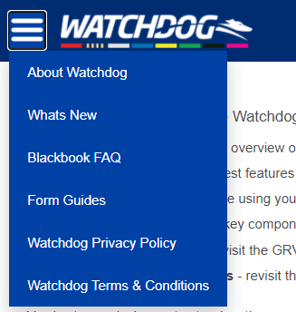

Watchdog Help
Have questions about using the Watchdog Application? Try our new help system to get you started! Available help topics include:
- About Watchdog - provides an overview of the Watchdog Application and key features.
- What's New - check out the latest features in Watchdog.
- Blackbook FAQ - having trouble using your Watchdog Blackbook? Check out our Frequently Asked Questions (FAQ).
- Form Guides - outlines all the key components of the original PDF form guides, and shows you where to access
all the information you need (and more!) in Watchdog.
- Watchdog Privacy Policy - revisit the GRV Privacy Policy.
- Watchdog Terms & Conditions - revisit the Watchdog Application terms and conditions.
Navigate our help content using the menu icon in the top left of the screen:

Still need help? For feedback and support on the Watchdog Application, please email: watchdogfeedback@grv.org.au.